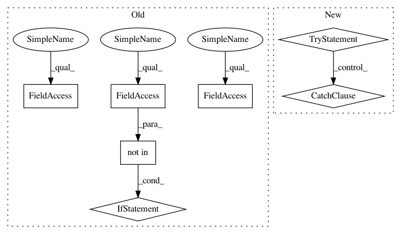

7a96f3dcb09d2f87ead6b5d0045d015f83d8838b,pygsp/plotting.py,,_plt_plot_graph,#Any#Any#Any#Any#Any#,144
Before Change
if show_edges is None:
show_edges = G.Ne < 10000
if "edge_color" not in G.plotting:
G.plotting["edge_color"] = np.array([255, 88, 41])/255.
// Matplotlib graph initialization in 2D and 3D
if G.coords.shape[1] == 2:
ax = fig.add_subplot(111)
elif G.coords.shape[1] == 3:
ax = fig.add_subplot(111, projection="3d")
if show_edges:
ki, kj = np.nonzero(G.A)
if G.is_directed():
raise NotImplementedError
else:
if G.coords.shape[1] == 2:
ki, kj = np.nonzero(G.A)
x = np.concatenate((np.expand_dims(G.coords[ki, 0], axis=0),
np.expand_dims(G.coords[kj, 0], axis=0)))
y = np.concatenate((np.expand_dims(G.coords[ki, 1], axis=0),
np.expand_dims(G.coords[kj, 1], axis=0)))
if isinstance(G.plotting["vertex_color"], list):
ax.plot(x, y, linewidth=G.plotting["edge_width"],
color=G.plotting["edge_color"],
linestyle=G.plotting["edge_style"],
marker="", zorder=1)
ax.scatter(G.coords[:, 0], G.coords[:, 1], marker="o",
s=G.plotting["vertex_size"],
c=G.plotting["vertex_color"], zorder=2)
else:
ax.plot(x, y, linewidth=G.plotting["edge_width"],
color=G.plotting["edge_color"],
linestyle=G.plotting["edge_style"],
marker="o", markersize=G.plotting["vertex_size"],
markerfacecolor=G.plotting["vertex_color"])
if G.coords.shape[1] == 3:
// Very dirty way to display a 3d graph
x = np.concatenate((np.expand_dims(G.coords[ki, 0], axis=0),
np.expand_dims(G.coords[kj, 0], axis=0)))
y = np.concatenate((np.expand_dims(G.coords[ki, 1], axis=0),
np.expand_dims(G.coords[kj, 1], axis=0)))
z = np.concatenate((np.expand_dims(G.coords[ki, 2], axis=0),
np.expand_dims(G.coords[kj, 2], axis=0)))
ii = range(0, x.shape[1])
x2 = np.ndarray((0, 1))
y2 = np.ndarray((0, 1))
z2 = np.ndarray((0, 1))
for i in ii:
x2 = np.append(x2, x[:, i])
for i in ii:
y2 = np.append(y2, y[:, i])
for i in ii:
z2 = np.append(z2, z[:, i])
for i in range(0, x.shape[1] * 2, 2):
x3 = x2[i:i + 2]
y3 = y2[i:i + 2]
z3 = z2[i:i + 2]
ax.plot(x3, y3, z3, linewidth=G.plotting["edge_width"],
color=G.plotting["edge_color"],
linestyle=G.plotting["edge_style"],
marker="o", markersize=G.plotting["vertex_size"],
markerfacecolor=G.plotting["vertex_color"])
After Change
except KeyError:
vertex_size = 100
try:
edge_color = G.plotting["edge_color"]
except KeyError:
edge_color = np.array([255, 88, 41]) / 255.
// Matplotlib graph initialization in 2D and 3D
if G.coords.shape[1] == 2:
ax = fig.add_subplot(111)
elif G.coords.shape[1] == 3:
ax = fig.add_subplot(111, projection="3d")
In pattern: SUPERPATTERN
Frequency: 3
Non-data size: 7
Instances
Project Name: epfl-lts2/pygsp
Commit Name: 7a96f3dcb09d2f87ead6b5d0045d015f83d8838b
Time: 2017-08-17
Author: michael.defferrard@epfl.ch
File Name: pygsp/plotting.py
Class Name:
Method Name: _plt_plot_graph
Project Name: epfl-lts2/pygsp
Commit Name: 7a96f3dcb09d2f87ead6b5d0045d015f83d8838b
Time: 2017-08-17
Author: michael.defferrard@epfl.ch
File Name: pygsp/plotting.py
Class Name:
Method Name: _plt_plot_graph
Project Name: scikit-multiflow/scikit-multiflow
Commit Name: db3d4586a34f3734edf92454b9c16e1511369ddf
Time: 2018-03-16
Author: jacob.montiel@gmail.com
File Name: skmultiflow/classification/trees/arf_hoeffding_tree.py
Class Name: RandomLearningNode
Method Name: learn_from_instance
Project Name: home-assistant/home-assistant
Commit Name: cd58147fa7c65085b8c53a99cb53a1ba658da5ce
Time: 2014-01-20
Author: Paulus@PaulusSchoutsen.nl
File Name: homeassistant/__init__.py
Class Name: StateMachine
Method Name: set_state